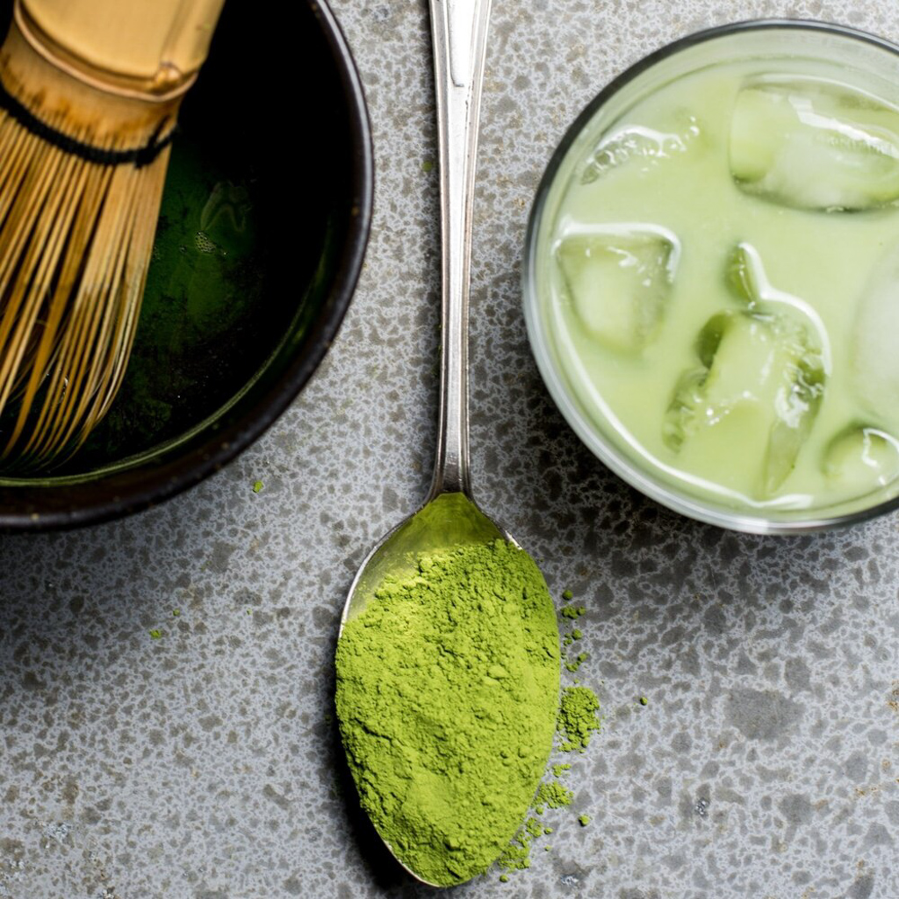
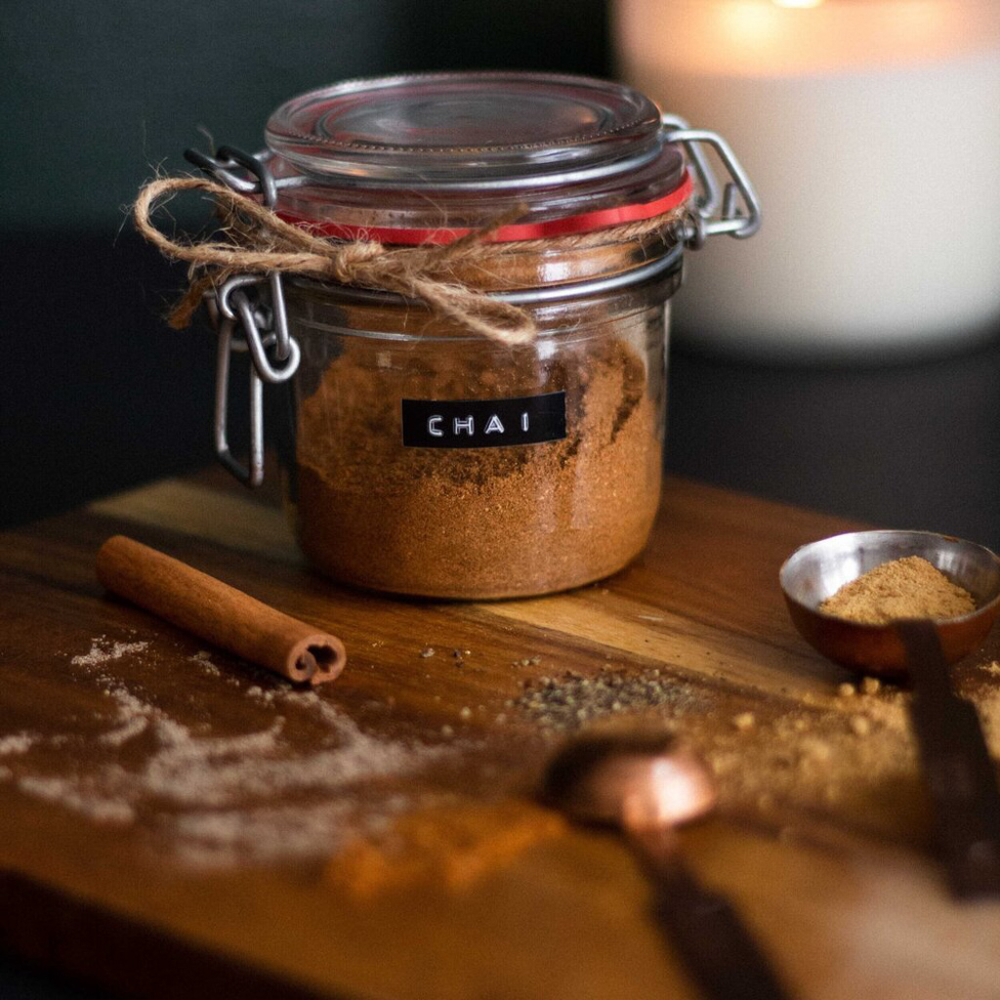
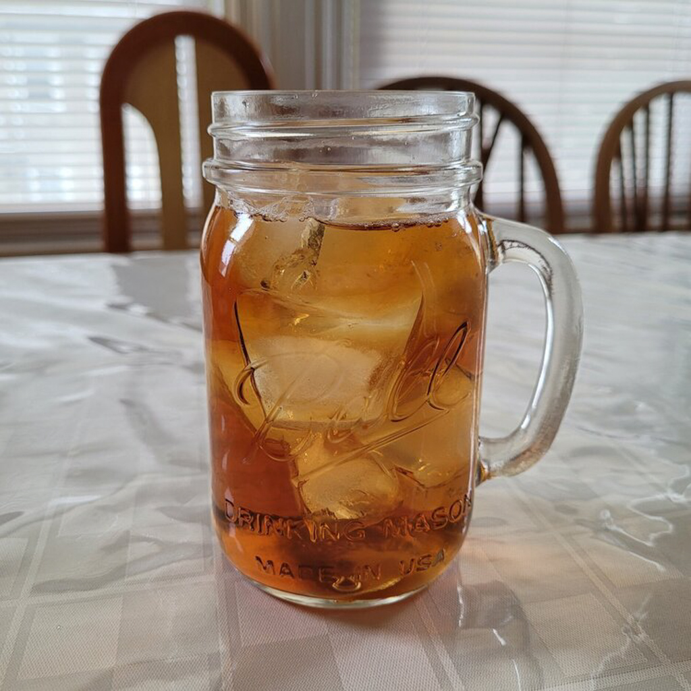
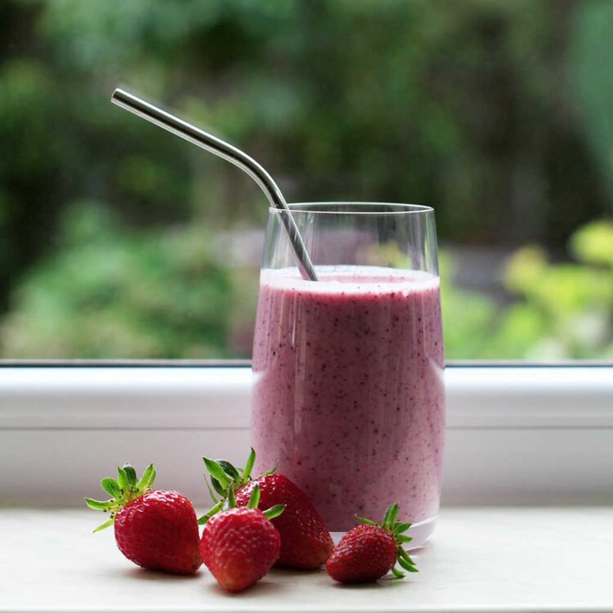

Our Favorite Non Coffee Drinks to Make
Aug 8 - Written by Bonnie and Emily
As we try our best not to become addicted to coffee, we often switch up our morning drinks with non coffee options.
Though they still contain caffeine, there are ways you can make them caffeine free if you choose to do so. So whether you’re just not a fan of coffee or just looking to switch things up, here are some of our favorite non coffee drinks to make!
Matcha Latte with Matcha Cream
When it comes to non-caffeinated drinks, nothings better than a matcha filled drink! This matcha latte topped with matcha cream is perfect for when you’re craving a drink thats a little bit creamier and thicker. Since Bonnie recently got a new frother, everything about making drinks has been so much easier, especially for this drink! On top of your usual matcha latte made with your choice of milk, matcha powder and sweetener, you can easily make matcha cream with heavy cream and matcha powder! To make it super quick, whip up the heavy cream with a frother and there you go. Other ways to switch it up include using iced matcha without any milk and mixing it with the matcha cream to make a great balance between tea and milk flavors! This is a perfect way to get an extra dose of matcha flavors to create the perfect drink for an afternoon pick me up.
Chai Latte
Chai is another favorite of ours to substitute for coffee! There’s so many different ways to make a chai latte at home but the beautiful blend of spices and milk will always create a delicious harmony. You can purchase chai latte mixes from your local grocery store but we often prefer to brew our own chai tea bags so that we have control over how much chai flavor and sweetener we want to add! Depending on how much chai flavor you would like your latte to have, you can steep the tea leaves for a longer or shorter amount of time. You could even brew your tea ahead of time so you don’t have to wait to make your latte! Once your chai tea is ready, you can add in a 1:1 ratio of milk and your favorite choice of sweetener, Bonnie’s is honey! Mix it all together to make a perfect homemade chai latte for a great morning drink.
Iced Tea
Iced tea is one of those simple drinks you can make with any tea of your choice. Back in high school, we would always stop by Starbucks and pick up one of their special iced teas. From passion tea lemonades to peach green teas, they became one of our go to drinks. So instead of spending a few dollars at Starbucks every time we want an iced tea, we can make our own. You can go as simple as brewing some tea and letting it cool before adding in ice and your choice of sweetener or add a splash of lemonade to turn it into an Arnold Palmer or one of Starbucks’ infamous iced teas. The options here are endless and it's the simplest drink you can make any time of the day.
Now you may be seeing a trend here in that just about all our favorite non coffee beverages are teas and that's because we both love tea and grew up drinking it all the time. If tea is not your thing either, there are many other summer beverage options you can make.
Smoothies
One of those beverages that can also be your breakfast if you're in a time crunch. Smoothies are one of those drinks that we love making in the mornings if we’re looking for something more substantial than just a cup of tea. Some of our favorite smoothies to make are strawberry mango and a mixed berry smoothie but the options are endless. You can use whatever fruits or even vegetables you like. We like using frozen fruit and berries because it helps make our smoothies nice and thick without the need for ice. As for liquids, we often add some orange juice or milk depending on the type of smoothie we are making. This drink only takes a couple minutes to whip together and it is the perfect way to add in some extra fruits and veggies into your day!
Now these are just some of our favorite drinks that we have been making but there are tons more out there. From virgin options of your favorite alcoholic drink to some summer time classics.